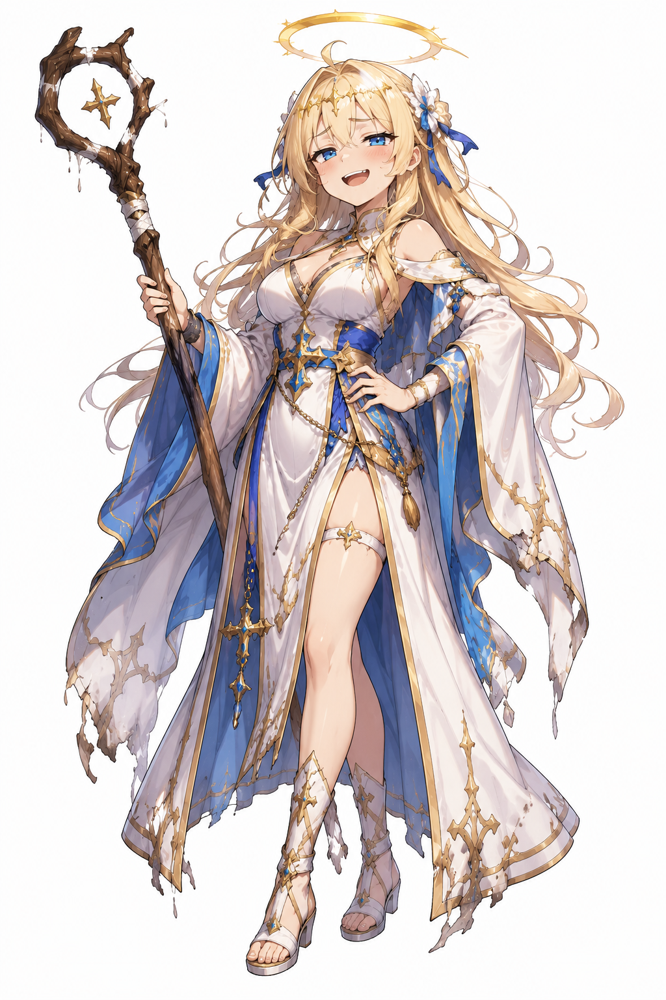
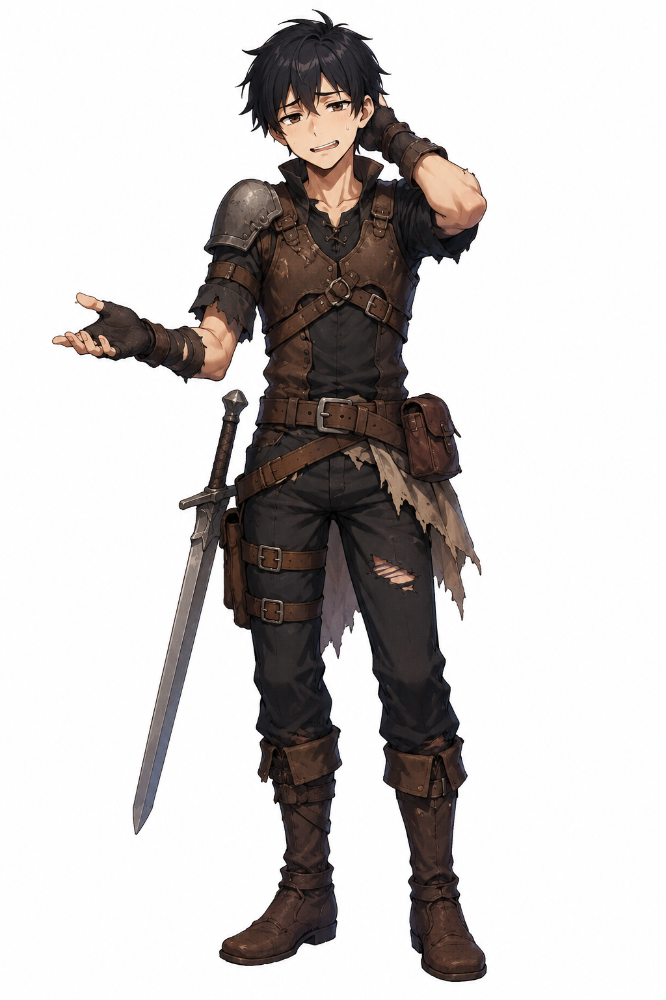
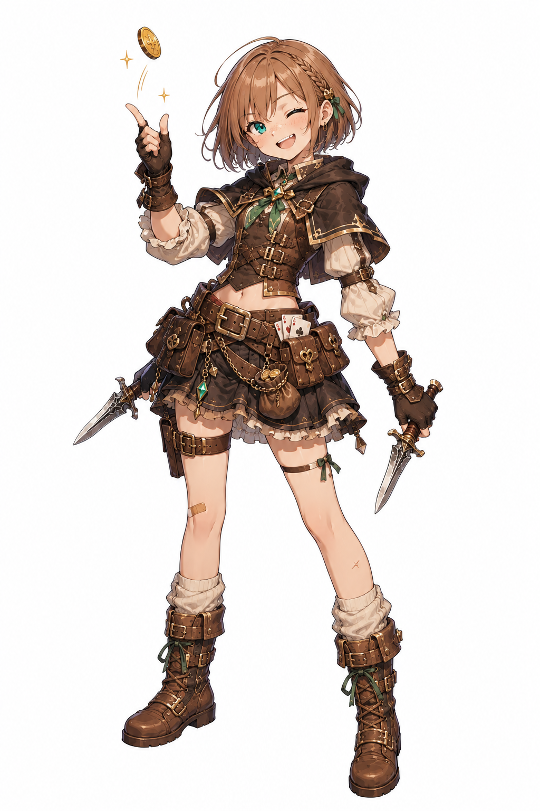
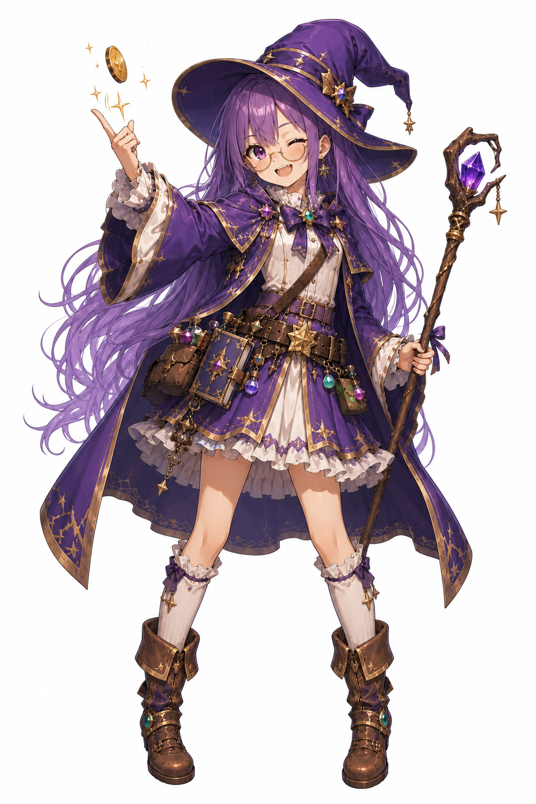

冒険者を雇い、クエストを攻略し、ギルドを育てよ。AI制作の本格シミュレーションRPG。じっくり遊べる戦略性の高い1本。
💡 じっくり戦略を練りたい本格SRPG / PC推奨
あなたは新進気鋭のギルドマスター。冒険者を雇い、装備を整え、クエストを請け負って報酬を稼ぐ。資金がたまれば設備拡張、新しい仲間を勧誘、強敵への挑戦 ── 全てはあなたの戦略次第。
従来のSRPGの面白さをミニマムに凝縮しつつ、AIだから可能になった独特の世界観とキャラクター設計が特徴。1日で完成するゲームのレベルを超えた、じっくり遊べる作品です。
NovelAIで生成された個性豊かな4人の仲間。それぞれの強みを活かしたパーティ編成を組もう。

Alice
Hal
Nico
Noel本格SRPGをAIで作るための主力ツール一覧です。
このゲームをAIで作る過程をYouTubeで公開しています。
プレイヤーがギルドマスターとなり、冒険者を雇用してクエストをこなしながらギルドを大きくしていく本格シミュレーションRPGです。資金管理・人材育成・戦略立案が求められる、じっくり遊べるAI制作HTML5ゲーム。
本作はじっくり遊べるシミュレーションのため、1プレイあたり30分〜数時間程度。途中までで止めてもブラウザのローカルストレージに進行状況が保存されます。
v0.6 betaです。基本ゲームループは完成していますが、今後コンテンツ追加・バランス調整を続けていく予定です。フィードバックはYouTubeコメント欄まで。
現在Alice・Hal・Nico・Noelの4人の冒険者が登場します。それぞれ異なる能力・装備傾向を持ち、編成と育成が攻略の鍵になります。今後さらに増える予定です。
このゲームはまだ開発中（v0.6）です。フィードバックや応援は YouTube チャンネル登録 で。次回バージョンの参考にします。
▶ YouTubeチャンネル登録（無料）